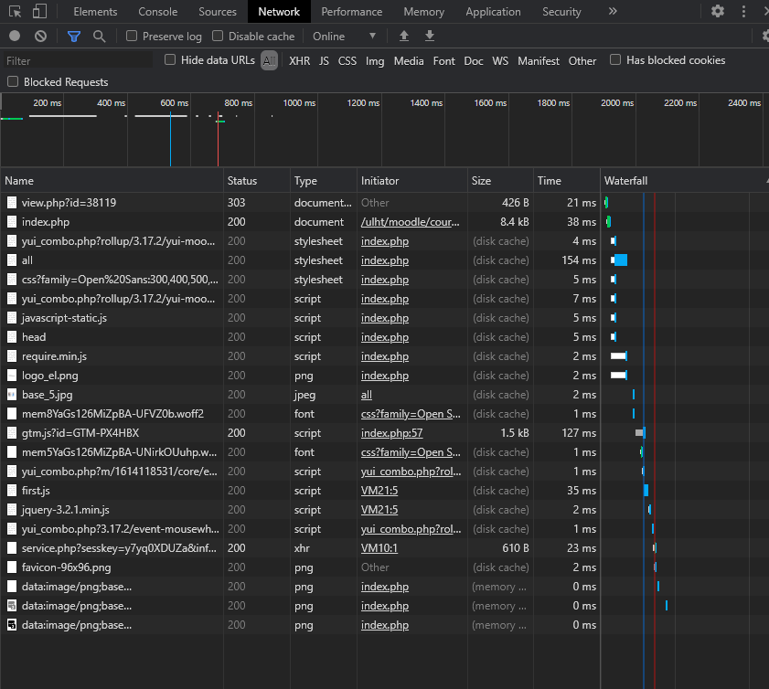

Esta imagem mostra onde o meu ip está localizado

Esta imagem mostra onde o ip do servidor do heroku está localizado

Na imagem em cima podemos verificar que ao carregar a página é feito o download da imagem presente no site assim como a página em si.
Ao carregar no hiperlink somos redirecionados para a página de login do moodle descarregando 23 ficheiros.
Tipos de ficheiro descarregados na página principal:
A Preview mostra-nos um snippet do site ou da imagem dependendo do ficheiro que escolhemos
Na aba Headers observamos a resposta do servidor ao pedido do cliente
No Timing observamos o tempo detalhado do download do ficheiro